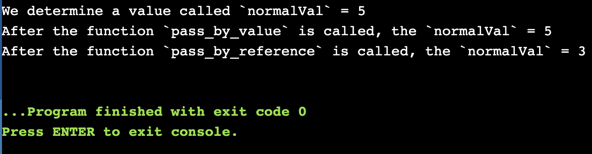
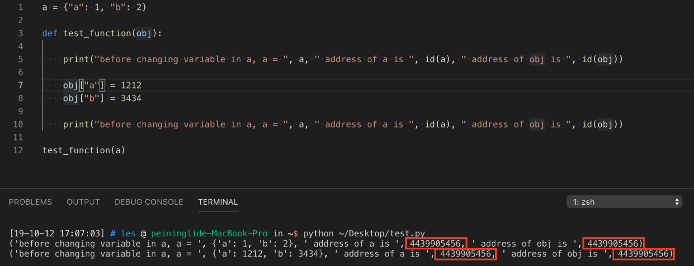
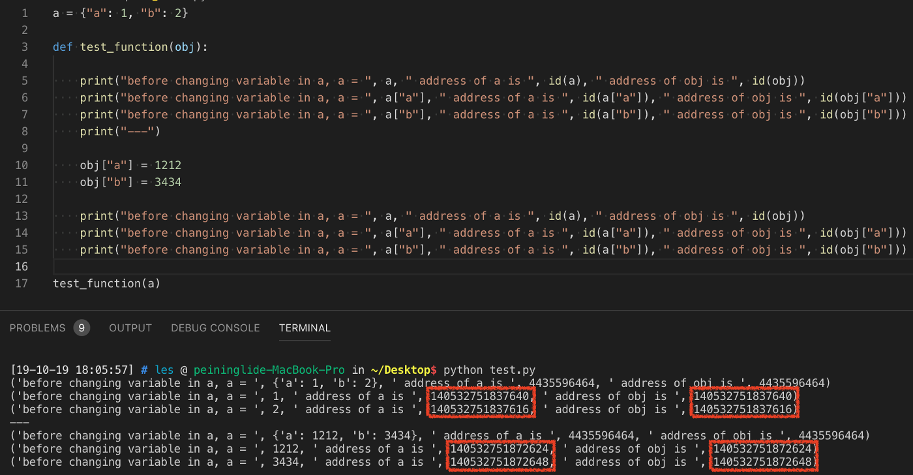
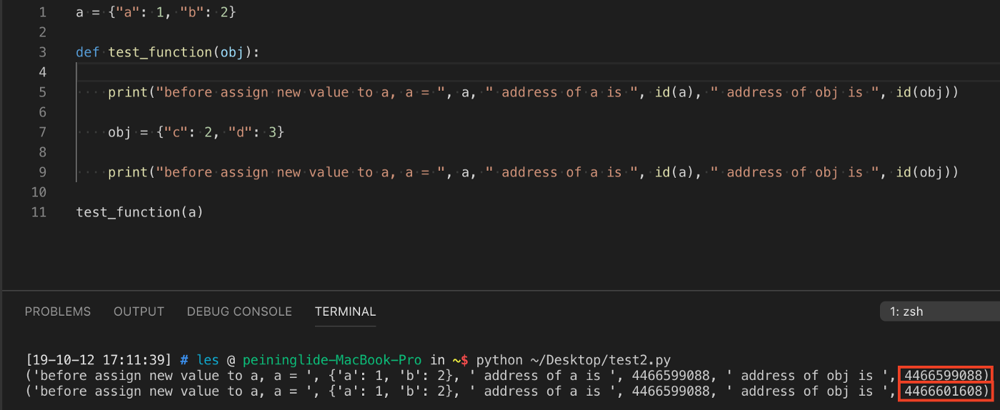
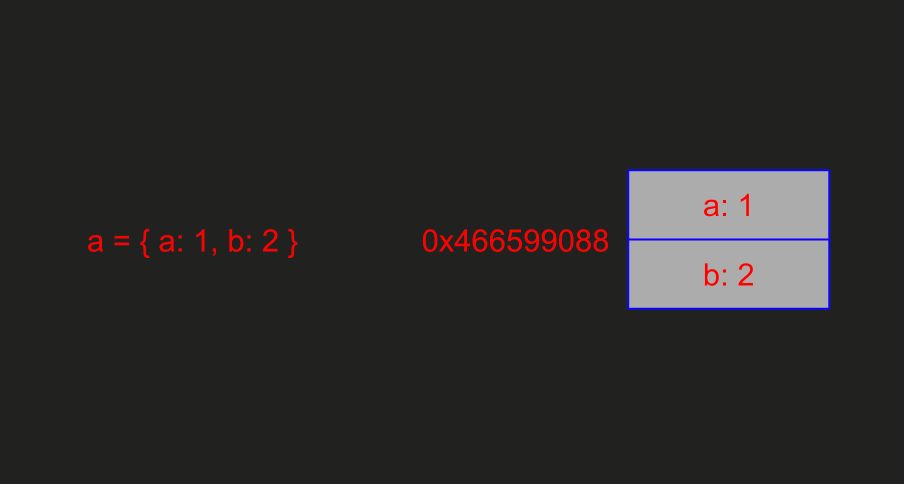
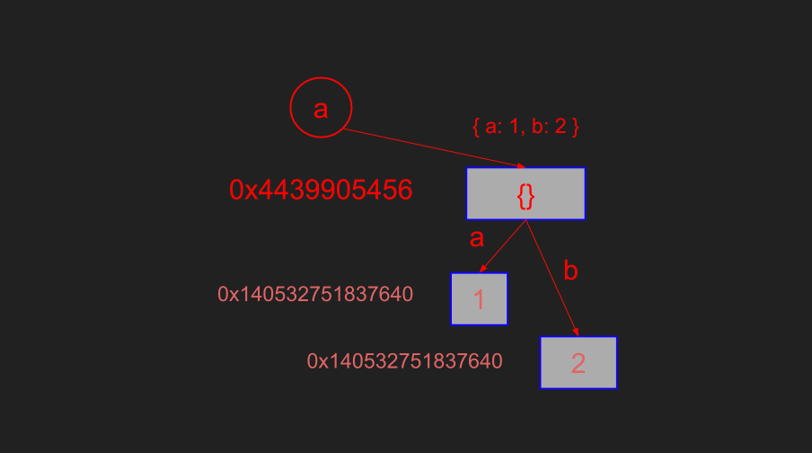

# 關於 Assignment (賦值) 這檔事
# Assign Value 這稀鬆平常的事情，卻常常會暗埋陷阱
最近朋友跟我討論到他在公司 Code Review Javascript Project 時對於 Javascript 賦值的「詭異行為」不明所以。
這讓我想到，在我過往只要接觸一門程式語言，我總要先去特地了解一下這門語言的「賦值行為」，因為每種語言對於賦值的行為總有些為差異。
# 「Pass-by-value」, 「Pass-by-reference」, 「Pass-by-sharing」 還是，「Pass-by-assignment」？
我們時常聽到程式的賦值行為有以下兩種定義：
- Pass-by-value: 複製參數的值傳入，所以原參數內容不會被影響。
- Pass-by-reference: 傳入參數的參考 (或是人們常說的 傳入記憶體位置 )，所以原參數內容會被影響。
以下我們以 C 語言為例
#include <stdio.h> | |
int pass_by_reference(int *val) { *val = 3; } | |
int pass_by_value(int val) { val = 4; } | |
int main() { | |
int normalVal = 5; | |
printf("We determine a value called `normalVal` = %d\n", normalVal); | |
pass_by_value(normalVal); | |
printf("After the function `pass_by_value` is called, the `normalVal` = %d\n", normalVal); | |
pass_by_reference(&normalVal); | |
printf("After the function `pass_by_reference` is called, the `normalVal` = %d\n", normalVal); | |
} |

可以看到，當使用 pass_by_value 的方法將 value 傳入 function 時， function 內部無論變數的 value 如何變更，都不會影響到外部；當使用 pass_by_reference 的方法傳入時， function 內部將參數的 value 變更，外部也會受到影響。
然而在 Javascript 與 Python 以上兩種語言中，參數的傳遞又好像不是單純依照這兩種準則運行，因此常常看到有人說 「Javascript 是 Pass-by-sharing」 、 「Python 是 Pass-by-assignment」 。
到底什麼是 Pass by sharing ? 什麼是 Pass by assignment ?
我們以以下三種情境來展示這四種行為的在 Javascript 與 python 的差異
情境一：傳入一個物件，在 function 內部改變物件的內容，不做回傳的動作
以下是 Javascript 行為
/** Javascript */ | |
var obj = {"a":1, "b":2}; | |
function ModifyObjet(object) { | |
object.c = 3; // assignment | |
} | |
ModifyObjet(object); | |
cobsole.log(obj); // {"a":1, "b":2, "c": 3} |
這是 Python 的行為，看起來結果跟 Javascript 一樣， 「在改變 object 內容後 obj 的內容都會改變」 ，對吧？
// Python | |
var obj = {"a":1, "b":2}; | |
def Modify_Objet(object): | |
object["c"] = 3; | |
print(obj); // {"a":1, "b":2, "c": 3} |
在這情境下， Javascript 跟 Python 展現出來的結果看起來就像是 Pass by reference。
接下來看看情境二
情境二：傳入一個物件，並且重設傳入的物件的內容，一樣不做回傳的動作
以下是 Javascript 行為
/** Javascript */ | |
var obj = {"a":1, "b": 2}; | |
function changeContain(object) { | |
object = {"d": 4, "e": 5}; | |
} | |
changeContain(obj); | |
console.log(obj); // {"a": 1, "b": 2}; |
以下是 Python 行為
// python | |
obj = {"a":1, "b":2} | |
def Change_Contain(object): | |
object = {"d": 4, "e": 5} | |
Change_Contain(obj) | |
print(object) // {"a":1, "b":2} |
我們發現，在 function 內重新對 object 賦值，並未改變 obj 的內容，表現得就像 Pass-by-value 一樣 。
剛剛不是說 Javascript 跟 Python 是 Pass-by-reference 嗎？ 怎麼這兩個 function 的結果表現，又跟 Pass-by-value 一樣了？
這兩個看起來一樣的動作 (修改變數 object 的值) 卻展現不一樣的結果，時常讓人覺得困惑。
我們用 Python 來解釋吧～
可以做一點實驗： 將 python 中的變數的記憶體位置印出來，確認是否相同。
- 僅修改 obj 內部的值，而不是直接重新賦值。

上圖是將 object a 傳入 function 中，修改變數 a 「內部」的值。
a 的記憶體位置與 obj 的記憶體位置相同，但是我們可以更進印出 obj[“a”] , obj[“b”] 的記憶體位置，並與 a[“a”] , a[“b”] 的記憶體位置比較，會發現 obj[“a”] , obj[“b”] 記憶體位置改變了。

- 對 obj 直接重新賦值，而非修改 obj 內部的值。

上圖是將 object a 傳入 function 中，修改變數 a 值。
a 的記憶體位置與 obj 的記憶體位置相同。
由此，我們可以歸納出一個結論：
當變數 a 傳入 function 中時， 變數 obj 指向變數 a 的所指向的記憶體位置；當我們重新賦值給變數 obj 時，變數 obj 指向新值的記憶體位置。

同理，當我們改變 obj[“a”], obj[“b”] 的值時，也是將 obj[“a”], obj[“b”] 指向新的記憶體位置。

因為 python 中變數依照 「assign」的對象改變記憶體位置，因此有一說為 「pass-by-assignment」 。
同理，回到 Javascript：
由於 Javascript 事實上由 browser（若為 NodeJs 則為 V8 Engine）翻譯，因此我們無法直接觀看變數的記憶體位置。
但是我們可以藉由剛剛觀察 Python 的行為發現，其實兩者的操作邏輯是相同的，但由於 Javascript 並沒有真正意義上的記憶體位置，有的僅是「共享相同的變數空間」，所以有了 Pass-by-sharing 的說法。
# 結論
在寫這篇文章時，查詢了很多文獻，發現也有人講説 Javascript always pass by value 。
其實關於 assignment 這件事，很多時候定義都有些微的不同。依照分析的出發點不同解釋的角度也就不盡相同，但是描述的事情是一樣的。
本篇文章是依照我個人對 Javascript , Python 的理解、實驗的結果與查詢的資料，統合歸納出來的結論。
可能有些未盡完善的部分，若有指證，非常希望能留言讓我知道。
我很推薦「 深入探討 JavaScript 中的參數傳遞：call by value 還是 reference？ 」這篇文章，應該會比我說得再更清晰明瞭。
# 參考文獻
- 深入探討 JavaScript 中的參數傳遞：call by value 還是 reference？
- [Javascript] Pass By Value And Pass By Reference In JavaScript
- Pass By Sharing in Javascript (and Why it Matters)
- Python 的參數傳遞是 call-by-assignment